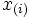
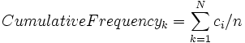
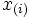
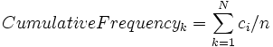

Die Daten bestehen aus einer Stichprobe n Beobachtungen einer diskretee Variablen, gekennzeichnet durch
/6ed2bc3df66dd893aefb0808148ec57e.png) füri=1,...,n gekennzeichnet. Die entsprechende Zahl des Werts  bezeichnet, d.h. die Häufigkeit des i-ten Werts. Die relative Häufigkeit und kumulative Häufigkeit von und 
füri=1,...,n gekennzeichnet. Die entsprechende Zahl des Werts  bezeichnet, d.h. die Häufigkeit des i-ten Werts. Die relative Häufigkeit und kumulative Häufigkeit von und 